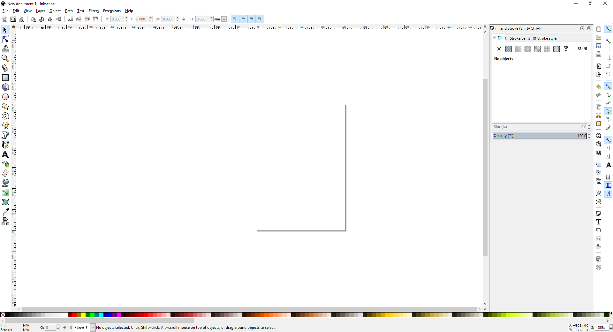
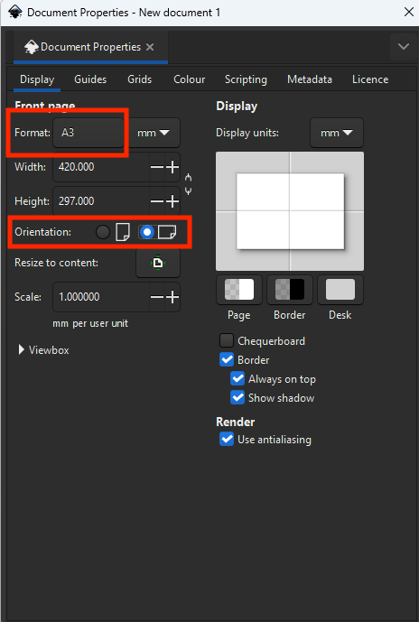
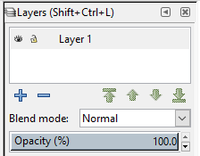
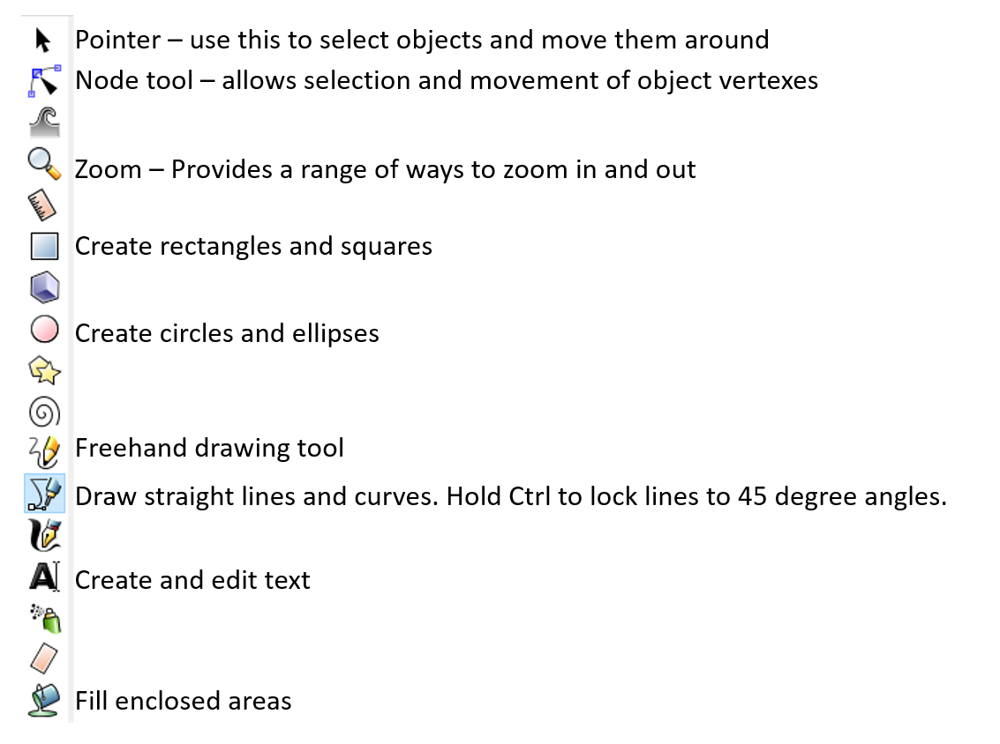
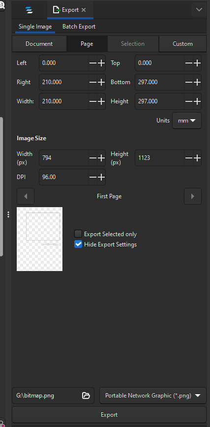

02/20/23
In this practical you will be introduced to the vector graphics program Inkscape. We will be using it to edit and combine Python plots and ArcGIS map documents.
By the end of this class you should be able to:
svg graphics from Python and ArcGIS into InkscapeBefore we can start using Inkscape to create data visualisations, we need to have some data to visualise. For this practical, and the associated assessment, we will be combining spatial and aspatial data in a single overall visualisation.
This first section is mostly revision from what we covered in GEG5223 last year. Our aim is to make a map in ArcMap that we can import into Inkscape. The map we are going to make is of catchments, with its hydrology overlain on a hillshade.
Load the DEM for a of the catchments in the data folder into ArcMap, these notes will use catchment 75001
Create a hillshade of the catchment DEMs (ArcToolbox > Spatial Analyst Tools > Surface > Hillshade)
Create a D-Inf flow direction raster for the catchment (ArcToolbox > Spatial Analyst Tools > Hydrology > Flow Direction)
Create a flow accumulation raster for for the catchment (ArcToolbox > Spatial Analyst Tools > Hydrology > Flow Accumulation)
Now we have the data we want to display, we can start to think about how to visualise it as a map. We want to show where water is likely to accumulate across the landscape. From our experience last year, we know that flow accumulation rasters have a very wide range of values, making it hard to find an appropriate colour ramp to show the full range of the data. We are going to log transform this data, which will let us see a wider range of values.
We can use Raster Calculator to do this calculation (ArcToolbox > Spatial Analyst Tools > Map Algebra > Raster Calculator), using the following expression:
Log10("75001_accum")Where 75001_accum is the name of your flow accumulation data for catchment 75001.
Do this and then play with the transparency, colour ramp and other display options until you get a result you are happy with. Now we can switch to the Layout View and finalise our map.
Once we have finished making our map, we need to export it in the svg format, by going to File > Export Map, and selecting SVG as the file type.
We have already created several graphs during today’s live coding session. Follow your notes from this part of the class to save one of these graphs as an svg file. For this practical any matplotlib plot in svg format will be fine.
Inkscape is installed on all of the student PCs on campus, including the ones in the Geography Computer Room and the library. To launch it, search for Inkscape in the Start Menu, or navigate to the Inkscape icon under I in the Start Menu.
It may take a little while to load, the first time you access it on a new machine, but once it loads it should look something like this:

When you load Inkscape, you will see a rectangle in the centre of the screen, this is the page outline. By default this is set up to be a portrait orientated A4 page. This means that any graphics you create inside this boundary will be able to be placed on a page of that size.
For our assignment, we need a landscape A3 sized drawing area. We can change this in File > Document Properties, which looks like:

The areas highlighted in the above image show where to change our document to landscape, and to select the A3 paper size. Close the menu once you have done this.
svg filesNow we need to load our map and graph into Inkscape. To do this we again use the File menu (File > Import...) and navigate to where we saved our svg map and graph from earlier. Select one of these, and click open. Repeat this process to load the second image.
Like many other graphics programs, Inkscape is able to represent our graphics as a series of layers. Open the layers tab from Layer > Layers.... It will open a small pane on the right of the window:

If we press the small eye symbol beside the layer name (Layer 1 by default), we can toggle the visibility of a layer. If we click the little padlock, we can lock a layer from editing. This allows us to build up complex visualisations as a series of independent layers. Layers are shown on the screen in order, from top to bottom, the same way that a GIS displays layers.
Split our graph and our map into different layers. Currently they are both in Layer 1. Lets create a new layer, that we will call graph, click on the plus symbol and input the new name for the layer and click Add. Next, rename Layer 1 to map, by double clicking on its name and typing the new name in.
Now we have 2 layers, but both of our objects are in the same layer. Lets move the graph into the new graph layer by right clicking on it and selecting Move to Layer, and then choosing the appropriate layer for the object. Note that when we are creating new objects, they are automatically created in the layer that is currently highlighted in the Layers Pane.
The key trick with svg files, is that they are built up of a series of individual shapes and objects. In order to edit either our map or our graph, we can right click on an object and select Ungroup to break it into its component parts. you may need to do this several times to get to the individual object you wish to interact with. One of the most common reasons for doing this is to try to increase our data-ink ratio, by removing superfluous lines from graphics created in other programs.
The majority of the tools you will need to edit, annotate and add to your data visualisations can be found on the left of the screen. When you select one of these tools, the bar on the top of the screen changes to show the various settings available for the currently chosen tool. Of the many tools on offer, the most useful ones for our purposes are:

If you wish to create a copy of an object, and be able to edit it, you need to Duplicate it rather than simply copy and paste it. To do this you can right click on an object and select Duplicate from the menu, or you can use the keyboard shortcut Ctrl+D to duplicate the currently selected objects.
When creating or editing objects, we can change the properties of lines (thickness, colour, transparency, etc) through the fill and stroke menu, which can be opened by right clicking on an object and selecting Fill and Stroke.... This will open a pane on the right of the window, which provides options to edit lines as well as changing the fill colour or pattern of solid objects.
Once you have completed all of the editing you wish to do on your maps and graphs, you can export them in a range of formats outlined in the Save As menu. Note that you should always save a copy of your work as an Inkscape SVG file to ensure you can come back and make more edits in the future.
You can also export a high resolution png version of your visualisation, using the Export PNG Image option in the file menu:

This allows you to export the whole page, or a currently selected object. You can increase the dpi (dots per inch) to export higher resolution images. Remember to click the Export button after choosing your output location, to actually start the export process.